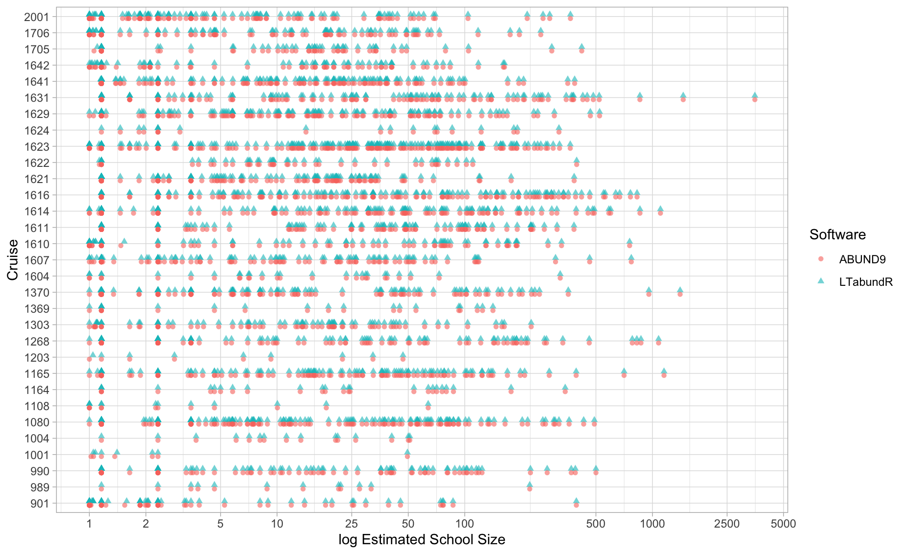

18 Validation
As explained in the Overview, LTabundR was developed , among other reasons, to replace and build upon the FORTRAN software ABUND. To demonstrate that this purpose has been achieved, and to validate the results that are generated with LTabundR, this chapter is dedicated to comparing and contrasting the results of the two software packages.
We have tried to develop LTabundR with the flexibility either to replicate ABUND results or to produce customizable results that could potentially vary from ABUND quite significantly (e.g., formatted for habitat modeling). However, even when we use LTabundR settings intended to replicate ABUND results, there are some intentional updates the processing routine that will lead to some small differences.
This chapter requires the following packages:
Data processing
To validate the data processing functions within LTabundR, we can compare its output to that of ABUND9, written by Jay Barlow (NOAA Fisheries). First, we bring in the ABUND9 output files for the same DAS data:
# Local paths to these files
SIGHTS <- read.csv('data/SIGHTS.csv')
EFFORT <- read.csv('data/EFFORT.csv')You may download these files here: SIGHTS.csv and EFFORT.csv.
Sightings
Pivot and format the ABUND SIGHTS data…
abund <-
SIGHTS %>%
pivot_longer(cols = 31:101,
names_to = 'species',
values_to = 'best') %>%
filter(best > 0) %>%
mutate(Region = gsub(' ','',Region)) %>%
mutate(DateTime = paste0(Yr,'-',Mo,'-',Da,' ',Hr,':',Min))…then summarize counts of species within each cruise:
abund_summ <-
abund %>%
group_by(cruise = CruzNo, species) %>%
summarize(ntot_abund = n(),
nsys_abund = length(which(! Region %in% c('NONE',
'Off-Transect') &
EffortSeg > 0))) %>%
mutate(species = gsub('SP','',species))Then do the same for LTabundR output:
(This cruz object was produced in the Data Processing chapter.)
ltabundr <-
cruz$cohorts$all$sightings %>%
# Filter out species that ABUND ignored based on its INP file
filter(!species %in% c('CU', 'PU'))
ltabundr_summ <-
ltabundr %>%
filter(OnEffort == TRUE) %>%
group_by(cruise = Cruise, species) %>%
summarize(ntot_ltabundr = n(),
nsys_ltabundr = length(which(included == TRUE &
EffType %in% c('S','F'))))Now join these two datasets by cruise and species code:
mr <- full_join(abund_summ, ltabundr_summ, by=c('cruise', 'species'))
mr %>% head
# A tibble: 6 × 6
# Groups: cruise [1]
cruise species ntot_abund nsys_abund ntot_ltabundr nsys_ltabundr
<dbl> <chr> <int> <int> <int> <int>
1 901 002 3 2 3 2
2 901 013 4 4 4 4
3 901 015 2 1 2 1
4 901 018 2 1 2 1
5 901 031 1 1 1 1
6 901 032 2 0 2 0Compare the total On-Effort sightings in both outputs:
Compare total sightings valid for use in density estimation (EffType "S" or "F" only, as well as other criteria such as Bft 0 - 6):
Let’s find the rows with discrepancies in sighting counts:
bads <- which(mr$nsys_abund != mr$nsys_ltabundr |
mr$ntot_abund != mr$ntot_ltabundr |
is.na(mr$ntot_abund) |
is.na(mr$ntot_ltabundr) |
is.na(mr$nsys_abund) |
is.na(mr$nsys_ltabundr))
bads %>% length
[1] 7Let’s look at those rows in the joined dataframe:
mr[bads, ]
# A tibble: 7 × 6
# Groups: cruise [5]
cruise species ntot_abund nsys_abund ntot_ltabundr nsys_ltabundr
<dbl> <chr> <int> <int> <int> <int>
1 1203 015 1 0 2 0
2 1203 049 1 1 2 1
3 1621 073 5 4 5 3
4 2001 051 2 2 1 1
5 2001 059 1 0 2 1
6 1165 047 NA NA 1 1
7 1631 003 NA NA 1 0To investigate these 5 discrepancies, we will write a helper function that returns sightings details from both outputs for a given cruise-species:
sight_compare <- function(abund, ltabundr, cruise, spp){
message('ABUND:')
abund %>%
filter(CruzNo == cruise, species == paste0('SP',spp)) %>%
select(5, 34, 26, 29, 33, 3) %>%
mutate(use_sit = EffortSeg != 0) %>%
select(-EffortSeg) %>%
arrange(desc(use_sit)) %>%
print
abund %>%
filter(CruzNo == 1631) %>% pull(species) %>% table
message('\nLTabundR:')
ltabundr %>%
filter(Cruise == cruise, species == spp) %>%
select(Cruise, DateTime, Bft, mixed, best, OnEffort, EffType, use, included) %>%
rename(use_sit = included, use_effort = use) %>%
arrange(desc(use_effort)) %>%
tibble %>% print
}Discrepancies
Below we investigate each discrepancy identified above. Note that there are a few intentional design features that may produce differences in the sightings counts between ABUND9 and LTabundR. Here are a few:
(1) In ABUND9, only sightings that occur while OnEffort == TRUE are returned; in contrast, LTabundR does not remove any sightings (it just flags them differently, using the included column variable). This will be evident in one of the discrepancies below, in which a sighting that occurred during a Beaufort Sea State of 7 is not returned by ABUND9, since the INP file for the ABUND routine specified that only sightings within Bft 0-6 should be used in analysis. Note, however, that one can readily filter LTabundR sightings to emulate ABUND9 output if needed.
(2) LTabundR includes one additional criterion for inclusion in analysis: the sighting must occur at or forward of the beam (note that this restriction can be deactivated in load_cohort_settings().
(3) Since point-in-polygon calculations are very different in the two programs, it is possible that sightings occurring very near geostratum margins may be included/excluded differently.
Cruise 1203, Species 015
In this case, LTabundR has a non-systematic sighting that ABUND has ignored.
sight_compare(abund, ltabundr, 1203, '015')
ABUND:
# A tibble: 1 × 6
CruzNo DateTime Beauf Mixed best use_sit
<int> <chr> <int> <chr> <dbl> <lgl>
1 1203 2012-5-16 11:58 4 " F" 74.9 TRUE
LTabundR:
# A tibble: 2 × 9
Cruise DateTime Bft mixed best OnEffort EffType use_effort
<dbl> <dttm> <dbl> <lgl> <dbl> <lgl> <chr> <lgl>
1 1203 2012-05-13 13:19:44 5 TRUE 1 TRUE N TRUE
2 1203 2012-05-16 11:58:30 4 FALSE 74.9 TRUE N TRUE
# ℹ 1 more variable: use_sit <lgl>Looking at the sighting details from LTabundR …
(ltabundr %>% filter(Cruise == 1203, species == '015'))[1,]
Event DateTime Lat Lon OnEffort Cruise Mode
SpPerc260 S 2012-05-13 13:19:44 11.96733 -161.1727 TRUE 1203 C
OffsetGMT EffType ESWsides Course SpdKt Bft SwellHght WindSpdKt
SpPerc260 -10 N 2 18 9.2 5 6 21
RainFog HorizSun VertSun Glare Vis ObsL Rec ObsR ObsInd EffortDot
SpPerc260 5 12 12 FALSE 6 073 235 280 <NA> TRUE
EventNum file_das line_num stratum_HI_EEZ
SpPerc260 268 CenPac1986-2020_Final_alb_edited.das 493027 FALSE
stratum_OtherCNP stratum_WHICEAS year month day yday km_valid km_int
SpPerc260 TRUE FALSE 2012 5 13 134 TRUE 0
km_cum ship stratum use eff_bloc seg_id SightNo Subgroup
SpPerc260 191053.4 OES OtherCNP TRUE 57-2 2330 069 <NA>
SightNoDaily Obs ObsStd Bearing Reticle DistNm Cue Method Photos
SpPerc260 20120513_20 235 TRUE 90 NA 0.1 3 1 Y
Birds CalibSchool PhotosAerial Biopsy CourseSchool TurtleSp TurtleGs
SpPerc260 Y N N N NA <NA> NA
TurtleJFR TurtleAge TurtleCapt PinnipedSp PinnipedGs BoatType BoatGs
SpPerc260 <NA> <NA> <NA> <NA> NA <NA> NA
PerpDistKm species best low high prob mixed ss_tot lnsstot
SpPerc260 0.1852 015 1 NaN NaN FALSE TRUE 6.956522 1.93968
ss_percent n_sp n_obs n_best n_low n_high calibr ss_valid mixed_max
SpPerc260 NaN 2 1 1 1 1 TRUE FALSE FALSE
spp_max included
SpPerc260 <NA> TRUEAccording to ABUND, this sighting is not mixed-species, but LTabundR says it is. Looking at the raw DAS…
das_file <- 'data/surveys/CenPac1986-2020_Final_alb.das'
das <- das_readtext(das_file)
i <- which(substr(das$das, 6, 18) == '131944 051312')
das$das[i]
[1] "268S.131944 051312 N11:58.04 W161:10.36 069 235 3 1 090 0.10 N N N"
[2] "269A.131944 051312 N11:58.04 W161:10.36 069 Y Y 033 015 "
[3] "269C.131944 051312 N11:58.04 W161:10.36 Overall estimate for full group- never saw all at once. -EMO"
[4] "268G.131944 051312 N11:58.04 W161:10.36 069 A 235 1 090 0.10 "
[5] "269A.131944 051312 N11:58.04 W161:10.36 069 Y Y 033 015"
[6] "269C.131944 051312 N11:58.04 W161:10.36 begin PC protool, first sighting is subgroup 'A', acoustics already tracking "
[7] "269C.131944 051312 N11:58.04 W161:10.36 photos taken during sighting indicate Steno (015) present. Not seen or estimated during sighting. -EMO"We see that this was a sighting of false killer whales during which species 015 was picked up during photo-ID. In the absence of a percent composition estimate for this sighting, it was ignored by ABUND.
Cruise 1203, Species 049
In this case, LTabundR has a non-systematic sighting that ABUND has ignored.
sight_compare(abund, ltabundr, 1203, '049')
ABUND:
# A tibble: 1 × 6
CruzNo DateTime Beauf Mixed best use_sit
<int> <chr> <int> <chr> <dbl> <lgl>
1 1203 2012-5-3 14:21 6 " F" 1.16 TRUE
LTabundR:
# A tibble: 2 × 9
Cruise DateTime Bft mixed best OnEffort EffType use_effort
<dbl> <dttm> <dbl> <lgl> <dbl> <lgl> <chr> <lgl>
1 1203 2012-05-03 14:21:40 6 FALSE 1.16 TRUE S TRUE
2 1203 2012-05-07 10:54:09 7 FALSE 1 TRUE N FALSE
# ℹ 1 more variable: use_sit <lgl>Looking at the sighting details from LTabundR …
(ltabundr %>% filter(Cruise == 1203, species == '049'))[2,]
Event DateTime Lat Lon OnEffort Cruise Mode
SpPerc1614 S 2012-05-07 10:54:09 5.960333 -162.1255 TRUE 1203 C
OffsetGMT EffType ESWsides Course SpdKt Bft SwellHght WindSpdKt
SpPerc1614 -10 N 2 269 8.8 7 9 30
RainFog HorizSun VertSun Glare Vis ObsL Rec ObsR ObsInd EffortDot
SpPerc1614 5 5 1 FALSE 4.5 238 328 073 <NA> TRUE
EventNum file_das line_num
SpPerc1614 145 CenPac1986-2020_Final_alb_edited.das 489960
stratum_HI_EEZ stratum_OtherCNP stratum_WHICEAS year month day yday
SpPerc1614 FALSE TRUE FALSE 2012 5 7 128
km_valid km_int km_cum ship stratum use eff_bloc seg_id SightNo
SpPerc1614 TRUE 0 189739.1 OES OtherCNP FALSE 54-1 2309 052
Subgroup SightNoDaily Obs ObsStd Bearing Reticle DistNm Cue Method
SpPerc1614 <NA> 20120507_9 238 TRUE 310 10 0.52 3 4
Photos Birds CalibSchool PhotosAerial Biopsy CourseSchool TurtleSp
SpPerc1614 N N N N N NA <NA>
TurtleGs TurtleJFR TurtleAge TurtleCapt PinnipedSp PinnipedGs
SpPerc1614 NA <NA> <NA> <NA> <NA> NA
BoatType BoatGs PerpDistKm species best low high prob mixed ss_tot
SpPerc1614 <NA> NA 0.7377314 049 1 1 1 FALSE FALSE 1
lnsstot ss_percent n_sp n_obs n_best n_low n_high calibr ss_valid
SpPerc1614 0 1 1 1 1 1 1 TRUE TRUE
mixed_max spp_max included
SpPerc1614 TRUE 049 FALSEThis is a sighting of a single Ziphiid whale. It appears to be within the geostratum:
Loooking at the raw DAS data …
i <- which(substr(das$das, 6, 18) == '105409 050712')
das$das[(i[1] - 10):(i[1] + 3)]
[1] "135V.104143 050712 N05:57.61 W162:05.66 7 09 070 30.0"
[2] "136N.104143 050712 N05:57.61 W162:05.66 272 09.3"
[3] "137W.104143 050712 N05:57.61 W162:05.66 5 05 01 050 4.5"
[4] "138*.104234 050712 N05:57.62 W162:05.79"
[5] "139*.104434 050712 N05:57.62 W162:06.09"
[6] "140*.104634 050712 N05:57.63 W162:06.39"
[7] "141N.104713 050712 N05:57.63 W162:06.49 269 08.8"
[8] "142*.104834 050712 N05:57.63 W162:06.69"
[9] "143*.105034 050712 N05:57.63 W162:06.99"
[10] "144*.105234 050712 N05:57.63 W162:07.29"
[11] "145S.105409 050712 N05:57.62 W162:07.53 052 238 3 4 310 10.0 0.52 N N N"
[12] "146A.105409 050712 N05:57.62 W162:07.53 052 N N 049 "
[13] " 1 238 1 1 1 100"
[14] "147*.105434 050712 N05:57.62 W162:07.59" Note that the Beaufort sea state for this sighting is 7. When the ABUND routine was run, the INP file instructed it to disregard any sightings beyond Bft 6. This is why ABUND has no record of this sighting.
Cruise 1165, Species 047
In this case, LTabundR has a systematic sighting of a pygmy sperm whale that ABUND has ignored.
sight_compare(abund, ltabundr, 1165, '047')
ABUND:
# A tibble: 0 × 6
# ℹ 6 variables: CruzNo <int>, DateTime <chr>, Beauf <int>, Mixed <chr>,
# best <dbl>, use_sit <lgl>
LTabundR:
# A tibble: 1 × 9
Cruise DateTime Bft mixed best OnEffort EffType use_effort
<dbl> <dttm> <dbl> <lgl> <dbl> <lgl> <chr> <lgl>
1 1165 1988-07-30 19:28:00 0 FALSE 1.16 TRUE S TRUE
# ℹ 1 more variable: use_sit <lgl>
(ltabundr %>% filter(Cruise == 1165, species == '047'))[1,]
Event DateTime Lat Lon OnEffort Cruise Mode
SpPerc1460 S 1988-07-30 19:28:00 26.3 -121.1167 TRUE 1165 C
OffsetGMT EffType ESWsides Course SpdKt Bft SwellHght WindSpdKt
SpPerc1460 NA S 2 163 10.5 0 NA NA
RainFog HorizSun VertSun Glare Vis ObsL Rec ObsR ObsInd EffortDot
SpPerc1460 1 NA NA NA NA 038 068 051 <NA> TRUE
EventNum file_das line_num
SpPerc1460 92 CenPac1986-2020_Final_alb_edited.das 50173
stratum_HI_EEZ stratum_OtherCNP stratum_WHICEAS year month day yday
SpPerc1460 FALSE TRUE FALSE 1988 7 30 212
km_valid km_int km_cum ship stratum use eff_bloc seg_id SightNo
SpPerc1460 TRUE 0 15232.08 MAC OtherCNP TRUE 51-0 2279 07
Subgroup SightNoDaily Obs ObsStd Bearing Reticle DistNm Cue Method
SpPerc1460 <NA> 19880730_13 051 TRUE 45 3.38 0.9 3 4
Photos Birds CalibSchool PhotosAerial Biopsy CourseSchool TurtleSp
SpPerc1460 <NA> N <NA> <NA> <NA> NA <NA>
TurtleGs TurtleJFR TurtleAge TurtleCapt PinnipedSp PinnipedGs
SpPerc1460 NA <NA> <NA> <NA> <NA> NA
BoatType BoatGs PerpDistKm species best low high prob mixed
SpPerc1460 <NA> NA 1.178606 047 1.15942 1 1.259921 FALSE FALSE
ss_tot lnsstot ss_percent n_sp n_obs n_best n_low n_high calibr
SpPerc1460 1.15942 0.1479201 1 1 3 3 3 3 TRUE
ss_valid mixed_max spp_max included
SpPerc1460 TRUE TRUE 047 TRUETo investigate this sighting, we can filter our cruz object and take a look at a map of this sighting:
Using that map we see that this sighting occurred just inside of the OtherCNP geostratum. It is likely that the point-in-polygon subroutines inside ABUND9 decided that this sighting was out of the study area, and therefore excluded it. The subroutines used by LTabundR, which are based in the R package sf, should not be wrong in this case.
Cruise 1621-073
In this case, both LTabundR and ABUND logged the same total number of sightings, but ABUND determined that that one was not valid for for density estimation, whereas LTabundR determined that two of them were not valid.
sight_compare(abund, ltabundr, 1621, '073')
ABUND:
# A tibble: 5 × 6
CruzNo DateTime Beauf Mixed best use_sit
<int> <chr> <int> <chr> <dbl> <lgl>
1 1621 2002-11-8 14:19 3 " F" 3.48 TRUE
2 1621 2002-11-20 16:2 4 " F" 3.97 TRUE
3 1621 2002-11-22 10:27 4 " F" 4.96 TRUE
4 1621 2002-11-22 12:20 4 " F" 1.16 TRUE
5 1621 2002-11-29 13:48 5 " F" 2.32 TRUE
LTabundR:
# A tibble: 7 × 9
Cruise DateTime Bft mixed best OnEffort EffType use_effort
<dbl> <dttm> <dbl> <lgl> <dbl> <lgl> <chr> <lgl>
1 1621 2002-11-08 14:19:04 3 FALSE 3.48 TRUE S TRUE
2 1621 2002-11-20 16:02:58 4 FALSE 3.97 TRUE S TRUE
3 1621 2002-11-22 10:27:28 4 FALSE 4.96 TRUE S TRUE
4 1621 2002-11-22 12:20:33 4 FALSE 1.16 TRUE S TRUE
5 1621 2002-11-29 13:48:49 5 FALSE 2.32 TRUE N TRUE
6 1621 2002-11-20 12:59:22 4 FALSE 1.16 FALSE S FALSE
7 1621 2002-11-21 11:57:55 4 FALSE 1.16 FALSE S FALSE
# ℹ 1 more variable: use_sit <lgl>The discrepancy is in the November 8, 2002 sighting at 14:19:04. Looking at the sighting details from LTabundR…
(ltabundr %>% filter(Cruise == 1621, species == '073'))[1,]
Event DateTime Lat Lon OnEffort Cruise Mode
SpPerc11806 S 2002-11-08 14:19:04 22.539 -171.7638 TRUE 1621 C
OffsetGMT EffType ESWsides Course SpdKt Bft SwellHght WindSpdKt
SpPerc11806 10 S 2 108 9.4 3 5 10
RainFog HorizSun VertSun Glare Vis ObsL Rec ObsR ObsInd EffortDot
SpPerc11806 1 3 2 FALSE 6 200 073 208 <NA> TRUE
EventNum file_das line_num
SpPerc11806 129 CenPac1986-2020_Final_alb_edited.das 273857
stratum_HI_EEZ stratum_OtherCNP stratum_WHICEAS year month day yday
SpPerc11806 TRUE TRUE FALSE 2002 11 8 312
km_valid km_int km_cum ship stratum use eff_bloc seg_id SightNo
SpPerc11806 TRUE 0 91181.6 DSJ HI_EEZ TRUE 155-7 543 275
Subgroup SightNoDaily Obs ObsStd Bearing Reticle DistNm Cue Method
SpPerc11806 <NA> 20021108_57 208 TRUE 93 0.5 2.75 6 4
Photos Birds CalibSchool PhotosAerial Biopsy CourseSchool TurtleSp
SpPerc11806 Y N <NA> <NA> <NA> NA <NA>
TurtleGs TurtleJFR TurtleAge TurtleCapt PinnipedSp PinnipedGs
SpPerc11806 NA <NA> <NA> <NA> <NA> NA
BoatType BoatGs PerpDistKm species best low high prob mixed
SpPerc11806 <NA> NA 5.08602 073 3.478261 3 3 FALSE FALSE
ss_tot lnsstot ss_percent n_sp n_obs n_best n_low n_high calibr
SpPerc11806 3.478261 1.246532 1 1 6 6 6 6 TRUE
ss_valid mixed_max spp_max included
SpPerc11806 TRUE TRUE 073 FALSELTabundR was correct to exclude this sighting because the bearing was past the beam (93 degrees). The bearing of 93 is also given in the raw DAS data…
das_file <- 'data/surveys/CenPac1986-2020_Final_alb.das'
das <- das_readtext(das_file)
i <- which(substr(das$das, 6, 18) == '141904 110802')
das$das[i]
[1] "129S.141904 110802 N22:32.34 W171:45.83 275 208 6 4 093 0.5 2.75"
[2] "130A.141904 110802 N22:32.34 W171:45.83 275 Y N 073" … so it is not clear why ABUND did not exclude this sighting as invalid as well. It may be that ABUND was not expecting bearings above 90 degrees in the on-effort data.
Cruise 1631, Species 003
In this case, there was a non-systematic sighting of species 003 that was found by LTabundR but not by ABUND.
sight_compare(abund, ltabundr, 1631, '003')
ABUND:
# A tibble: 0 × 6
# ℹ 6 variables: CruzNo <int>, DateTime <chr>, Beauf <int>, Mixed <chr>,
# best <dbl>, use_sit <lgl>
LTabundR:
# A tibble: 1 × 9
Cruise DateTime Bft mixed best OnEffort EffType use_effort
<dbl> <dttm> <dbl> <lgl> <dbl> <lgl> <chr> <lgl>
1 1631 2006-09-02 07:35:14 5 TRUE 1 TRUE N TRUE
# ℹ 1 more variable: use_sit <lgl>
(ltabundr %>% filter(Cruise == 1631, species == '003'))
Event DateTime Lat Lon OnEffort Cruise Mode
SpPerc2279 S 2006-09-02 07:35:14 19.28883 -156.8227 TRUE 1631 P
OffsetGMT EffType ESWsides Course SpdKt Bft SwellHght WindSpdKt
SpPerc2279 10 N 2 155 10 5 4 18
RainFog HorizSun VertSun Glare Vis ObsL Rec ObsR ObsInd EffortDot
SpPerc2279 1 10 2 FALSE 7 073 196 197 <NA> TRUE
EventNum file_das line_num
SpPerc2279 026 CenPac1986-2020_Final_alb_edited.das 405222
stratum_HI_EEZ stratum_OtherCNP stratum_WHICEAS year month day yday
SpPerc2279 TRUE TRUE TRUE 2006 9 2 245
km_valid km_int km_cum ship stratum use eff_bloc seg_id SightNo
SpPerc2279 TRUE 0 139591.4 Mc2 WHICEAS TRUE 217-1 1149 090
Subgroup SightNoDaily Obs ObsStd Bearing Reticle DistNm Cue Method
SpPerc2279 <NA> 20060902_51 197 TRUE 59 0.3 4.12 2 4
Photos Birds CalibSchool PhotosAerial Biopsy CourseSchool TurtleSp
SpPerc2279 N N <NA> <NA> <NA> NA <NA>
TurtleGs TurtleJFR TurtleAge TurtleCapt PinnipedSp PinnipedGs
SpPerc2279 NA <NA> <NA> <NA> <NA> NA
BoatType BoatGs PerpDistKm species best low high prob mixed
SpPerc2279 <NA> NA 6.540392 003 1 NaN NA FALSE TRUE
ss_tot lnsstot ss_percent n_sp n_obs n_best n_low n_high calibr
SpPerc2279 3.478261 1.246532 NaN 2 1 0 1 0 TRUE
ss_valid mixed_max spp_max included
SpPerc2279 FALSE FALSE <NA> TRUEThe map indicates that this is not a geostratum boundary issue:
Looking at the raw DAS data …
das$das[405190:405220]
[1] " C 120000 090106 In transit to study area Sep 1. A.J. 10/18/06."
[2] "001B.061813 090206 N19:28.97 W156:55.51 1631 p 10 Y"
[3] "002R.061813 090206 N19:28.97 W156:55.51 N"
[4] "003P.061813 090206 N19:28.97 W156:55.51 197 007 277"
[5] "004V.061813 090206 N19:28.97 W156:55.51 5 04 150 18.0"
[6] "005N.061813 090206 N19:28.97 W156:55.51 154 10.4"
[7] "006W.061813 090206 N19:28.97 W156:55.51 1 10 03 032 7.0"
[8] "007C.061823 090206 N19:28.94 W156:55.50"
[9] "008*.062019 090206 N19:28.63 W156:55.33"
[10] "009*.063019 090206 N19:27.12 W156:54.53"
[11] "010P.063950 090206 N19:25.68 W156:53.75 196 197 007"
[12] "011C.063950 090206 N19:25.68 W156:53.75"
[13] "012V.063950 090206 N19:25.68 W156:53.75 5 04 150 18.0"
[14] "013N.063950 090206 N19:25.68 W156:53.75 151 10.1"
[15] "014W.063950 090206 N19:25.68 W156:53.75 1 10 03 032 7.0"
[16] "015*.064019 090206 N19:25.61 W156:53.71"
[17] "016N.064253 090206 N19:25.22 W156:53.50 153 10.3"
[18] "017*.065019 090206 N19:24.11 W156:52.90"
[19] "018*.070019 090206 N19:22.62 W156:52.11"
[20] "019*.071019 090206 N19:21.10 W156:51.30"
[21] "020*.072019 090206 N19:19.59 W156:50.53"
[22] "021P.072113 090206 N19:19.46 W156:50.45 073 196 197"
[23] "022V.072113 090206 N19:19.46 W156:50.45 5 04 150 18.0"
[24] "023N.072113 090206 N19:19.46 W156:50.45 155 10.0"
[25] "024W.072113 090206 N19:19.46 W156:50.45 1 10 02 032 7.0"
[26] "025*.073019 090206 N19:18.09 W156:49.75"
[27] "026S.073514 090206 N19:17.33 W156:49.36 090 197 2 4 059 0.3 4.12 013"
[28] "027A.073514 090206 N19:17.33 W156:49.36 090 N N 177 003"
[29] " 1 197 3"
[30] "028*.074019 090206 N19:16.53 W156:48.94"
[31] "029V.074337 090206 N19:16.01 W156:48.67 4 04 150 12.0" It appears that this was a multi-species sighting, but no species percentages were provided. In the absence of a percent composition estimate for this sighting, it was ignored by ABUND.
Group sizes
This plot compares the group size estimates returned by ABUND9 and LTabundR. The results should be identical:
# Format ABUND
abund <-
SIGHTS %>%
tidyr::pivot_longer(cols = 31:101,
names_to = 'species',
values_to = 'best') %>%
mutate(Region = gsub(' ','',Region)) %>%
filter(best > 0,
! Region %in% c('NONE', 'Off-Transect'),
EffortSeg > 0) %>%
select(Cruise = CruzNo, TotSS, LnTotSS, species, best) %>%
mutate(Software='ABUND9')
# Format LTabundR
ltabundr <-
cruz$cohorts$all$sightings %>%
filter(OnEffort == TRUE,
included == TRUE,
EffType %in% c('S', 'F')) %>%
select(Cruise, TotSS = ss_tot, LnTotSS = lnsstot, species, best) %>%
mutate(Software='LTabundR')
# Combine the datasets
ss <- rbind(abund, ltabundr)
# Plot the datasets
ggplot(ss,
aes(x=best,
y=factor(Cruise),
col=Software,
pch=Software)) +
geom_point(position=ggstance::position_dodgev(height=0.5),
alpha=.6) +
scale_x_continuous(trans='log', breaks=c(1,2, 5,10,25,50,100,500,1000,2500,5000)) +
xlab('log Estimated School Size') +
ylab('Cruise') +
theme_light()
Note two important differences in how the two programs calibrate group size:
(1) If an observer is not included in the Group Size Calibration Coefficients .DAT file, ABUND applies a default coefficient (0.8625) to scale group size estimates; however, it applies this calibration to groups of *all** sizes, including solo animals or small groups of 2-3. In LTabundR, this is also the default, but users can choose to restrict calibrations for unknown observers to group size estimates of any size (see load_cohort_settings()).
(2) Note that ABUND9 calibrates school sizes slightly differently than earlier versions of the software. The ABUND9 release notes mention a bug in previous versions that incorrectly calibrated school size. LTabundR corresponds perfectly with ABUND9 school size calibrations, but not with ABUND8 or earlier.
Effort
Perform basic formatting before doing any filtering , first for ABUND data…
# Format ABUND
abund <-
EFFORT %>%
mutate(Region = gsub(' ','',Region)) %>%
mutate(dt = paste0(Yr,
stringr::str_pad(Mo, width=2, pad='0', side='left'),
stringr::str_pad(Da, width=2, pad='0', side='left'))) %>%
rename(Cruise = CruzNo, Date = dt, km = length) %>%
mutate(effort = ifelse(Region == 'Off-Transect', 'N or F', 'S')) %>%
mutate(OnEffort = 'TRUE') %>%
mutate(software = 'ABUND 9') %>%
select(Region:Cruise, Date, effort, software)…then for LTabundR data. This helper function will be used below to format our cruz object:
ltabundr_prep <- function(cruz){
cruz$cohorts$all$das %>%
mutate(dt = gsub('-','',substr(DateTime, 1,10))) %>%
rename(Cruise = Cruise, Date = dt, km = km_int) %>%
mutate(effort = ifelse(EffType == 'S', 'S', 'N or F')) %>%
mutate(software = 'LTabundR') %>%
filter(OnEffort == TRUE) %>%
filter(!is.na(effort)==TRUE) %>%
group_by(software, Cruise, Date, effort) %>%
summarize(km = sum(km))
}Here is one more helper function to generate an interactive plot that compares systematic effort for each cruise in ABUND vs LTabundR:
eff_plot <- function(abund, ltabundr){
# Join datasets
eff <-
rbind(abund %>% select(Cruise, Date, km, effort, software),
ltabundr %>% select(Cruise, Date, km, effort, software)) %>%
filter(effort == 'S') %>%
group_by(Cruise) %>%
summarize(km_abund = sum(km[software == 'ABUND 9']) %>% round,
km_ltabundr = sum(km[software == 'LTabundR']) %>% round)
# Prepare plot
p <-
ggplot(eff, aes(x = km_abund, y = km_ltabundr, col=factor(Cruise))) +
geom_abline(slope=1, intercept=0, lty=3) +
geom_point(alpha=.6) +
ylab('LTabundR') + xlab('ABUND9') +
scale_x_continuous(breaks = seq(0, 15000, by=2500)) +
scale_y_continuous(breaks = seq(0, 15000, by=2500)) +
labs(title='Effort per cruise', col='Cruise') +
theme_light()
# Make it interactive
ggplotly(p)
}This helper function is a tabular version of the comparison plot:
error_table <- function(df){
dfi <-
df %>%
filter(effort == 'S') %>%
group_by(Cruise) %>%
summarize(year = lubridate::year(lubridate::ymd(Date))[1],
km_abund = sum(km[software == 'ABUND 9']) %>% round,
km_ltabundr = sum(km[software == 'LTabundR']) %>% round) %>%
mutate(diff = km_abund - km_ltabundr) %>%
mutate(prop = ((abs(diff) / km_abund)) %>% round(5)) %>%
arrange(desc(prop)) %>%
as.data.frame()
lm(km_ltabundr ~ km_abund, data=dfi) %>% summary %>% print
return(dfi)
}Now we format the LTabundR data and produce the comparison plot:
# Format LTabundR data for comparison
ltabundr <- ltabundr_prep(cruz)
# Interactive plot
eff_plot(abund, ltabundr)And here is the tabular version of that plot, sorted by the difference in KM, relative to total length of the Cruise (according to ABUND 9). The statistical summary of a linear regression is also returned:
# Combine software data
df <- rbind(abund %>% select(software, Cruise, Date, effort, km),
ltabundr %>% select(software, Cruise, Date, effort, km))
# Produce comparison table
error_table(df)
Call:
lm(formula = km_ltabundr ~ km_abund, data = dfi)
Residuals:
Min 1Q Median 3Q Max
-8.659 -6.692 -2.933 3.094 34.505
Coefficients:
Estimate Std. Error t value Pr(>|t|)
(Intercept) 5.6871663 2.3871073 2.382 0.0229 *
km_abund 1.0023296 0.0004711 2127.734 <0.0000000000000002 ***
---
Signif. codes: 0 '***' 0.001 '**' 0.01 '*' 0.05 '.' 0.1 ' ' 1
Residual standard error: 9.337 on 34 degrees of freedom
Multiple R-squared: 1, Adjusted R-squared: 1
F-statistic: 4.527e+06 on 1 and 34 DF, p-value: < 0.00000000000000022 Cruise year km_abund km_ltabundr diff prop
1 1426 1991 11 28 -17 1.54545
2 1628 2005 2 1 1 0.50000
3 1508 1993 3 2 1 0.33333
4 1081 1987 50 60 -10 0.20000
5 1108 2011 2493 2539 -46 0.01845
6 1203 2012 1492 1507 -15 0.01005
7 1623 2003 4970 5011 -41 0.00825
8 1604 2016 1557 1568 -11 0.00706
9 1303 2013 3814 3838 -24 0.00629
10 2001 2020 4417 4442 -25 0.00566
11 901 2009 2004 2013 -9 0.00449
12 1631 2006 4040 4058 -18 0.00446
13 1370 1990 5425 5447 -22 0.00406
14 1616 2000 4960 4979 -19 0.00383
15 1165 1988 3433 3446 -13 0.00379
16 1706 2017 8965 8999 -34 0.00379
17 1004 2010 1123 1127 -4 0.00356
18 1705 2017 7345 7370 -25 0.00340
19 1080 1987 4367 4381 -14 0.00321
20 1629 2005 11072 11106 -34 0.00307
21 1610 1998 3163 3172 -9 0.00285
22 1642 2010 6347 6365 -18 0.00284
23 1614 1999 5883 5899 -16 0.00272
24 1164 1988 804 806 -2 0.00249
25 1607 1997 6669 6685 -16 0.00240
26 1622 2002 4599 4610 -11 0.00239
27 1641 2010 11721 11746 -25 0.00213
28 1621 2002 12436 12462 -26 0.00209
29 1611 1998 4055 4063 -8 0.00197
30 1268 1989 3750 3757 -7 0.00187
31 990 1986 3793 3800 -7 0.00185
32 989 1986 747 748 -1 0.00134
33 1369 1990 923 924 -1 0.00108
34 1001 2010 1134 1135 -1 0.00088
35 1617 2001 1 1 0 0.00000
36 1624 2003 763 763 0 0.00000Note that there are a few intentional design features that may produce differences in effort calculation and segment divisions between the ABUND9 and LTabundR programs. Here are a few:
(1) LTabundR works with DAS data that are loaded and formatted using swfscDAS:das_read() and das_process(). It is possible that these functions categorize events as On- or Off-Effort slightly differently than ABUND, or apply other differences that would be difficult for us to know or track.
(2) After loading the data, LTabundR removes rows with invalid Cruise numbers, invalid times, and invalid coordinates. As far as we can tell, ABUND does not remove such missing data. This is a relatively minor point; in processing the 1986-2020 data (623,640 rows), 287 rows are missing Cruise info; 1,430 are missing valid times; and 556 are missing valid coordinates, for a total of 2,273 rows removed out of more than 625,000 (0.3% of rows). Many of these rows with missing data have the exact same coordinates and timestamps as complete rows nearby, since WinCruz can sometimes produce multiple lines at the same time when setting up metadata for the research day, which means that this row removal will rarely, if ever, effect total effort calculated.
(3) In ABUND, custom functions are used to calculate whether DAS coordinates occur within geostrata are difficult to validate, and it is possible that they differ from the functions used in R for the same purpose. LTabundR uses functions within the well-established sf package to do these same calculations.
(4) Both ABUND and LTabundR calculate the distance surveyed based on the sum of distances between adjacent rows in the DAS file. They do this differently, which may yield minor differences in total effort segment track lengths, but the default inputs for the load_survey_settings() function were selected to come as close to replicating the ABUND9 routine as possible. The ABUND9 routine (and therefore the LTabundR defaults) allow for large gaps (as much as 100 km) between subsequent rows within a single day of effort. The ABUND9 subroutine prints a warning message when the gap is greater than 30 km, but does not modify its estimate of distance traveled. This allows for the possibility that, in rare cases, estimates of distance surveyed will be spuriously large.
(5) While ABUND uses a minimum length threshold to create segments, such that full-length segments are never less than that threshold and small remainder segments always occur at the end of a continuous period of effort, LTabundR uses an approach more similar to the effort-chopping functions in swfscDAS: it looks at continuous blocs of effort, determines how many full-length segments can be defined in each bloc, then randomly places the remainder within that bloc according to a set of user-defined settings (see load_survey_settings(). This process produces full-length segments whose distribution of exact lengths is centered about the target length, rather than always being greater than the target length.
(6) To control the particularities of segmentizing, LTabundR uses settings such as segment_max_interval, which controls how discontinuous effort is allowed to be pooled into the same segment. These rules may produce slight differences in segment lengths.
(7) Note that, since ABUND is a loop-based routine while LTabundR is modular, segments identified by the two program will never be exactly identical, and a 1:1 comparison of segments produced by the two programs is not possible.